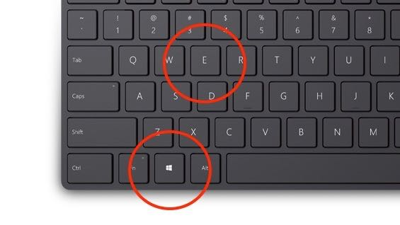
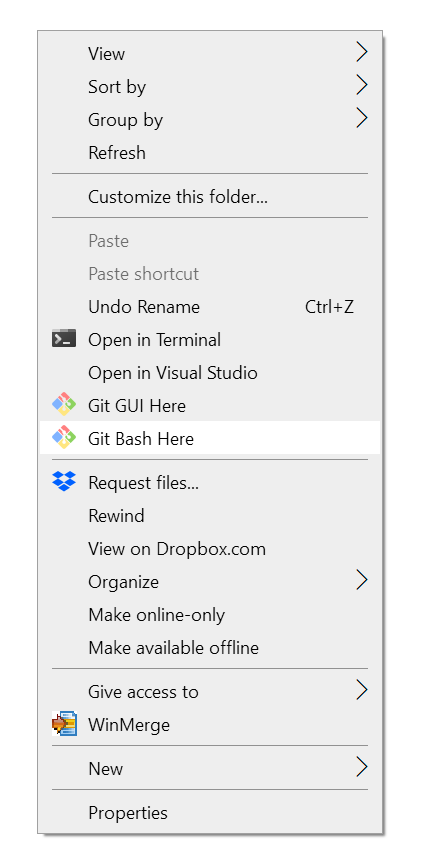
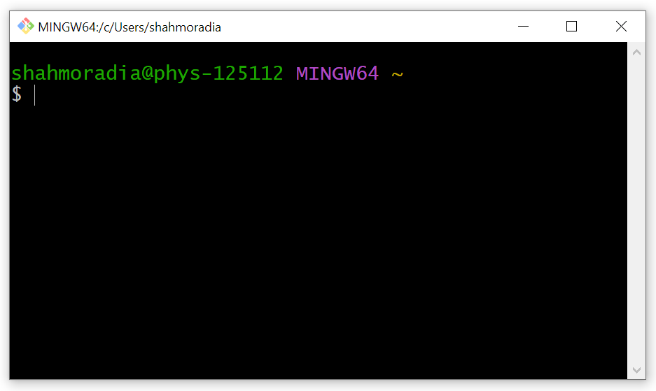

This exercise guides you through the steps needed to take to properly install and minimally use the git software and the Git Bash terminal on your system.
By the end of this exercise, you will be able to initialize an empty git project anywhere in your computer, or initialize a project on GitHub and clone it to your system.
Guidelines. Use the following references for operations in a (Git) Bash terminal.
- Linux Bash command reference
- Only Windows users. Before installing the Git software, I highly recommend you to download and install the most recent version of Nodepad++ text editor on your system, if you do not have it already.
- Git installation. Visit the Git downloads website and download the most recent version of the git software to install on your system.
- Only Windows users. During the installation, the git software may ask you to link your Notepad++ software with git. If given this option, choose it.
- Interacting with Git.
- Depending on your operating system,
- On Windows systems,
- press the Windows key +
Eto open a Windows explorer.
 - Then, navigate to the directory
C:\Users\account, where you have to replaceaccountwith your Windows account name. - Now right-click on an empty region of the Windows explorer, you should see a menu like the following.

Click on “Git Bash Here” to open a Git Bash session. You should see a Bash session opened like the following screen shot,

What is Git Bash? Git Bash is simply a Bash terminal that is tailored for Git usage on Windows.
The Linux and macOS operating systems have Bash-compatible terminals (shells) that allow interaction with the operating system.
The Git software was originally built as a Linux application that natively used the Linux terminals for interaction.
However, Windows system is not fully compatible with Linux terminals and does not have native Linux-compatible terminals.
Therefore, the Git developers decided to ship the Git software with a dedicated Bash terminal for use on Windows systems, so that Windows users also get the same feeling as Linux and macOS users when dealing with Git software.
- press the Windows key +
- On Linux / macOS systems.
- Simply search for terminal in the search box of your operating system and open a terminal.
- Then type
cd ~and press enter. This will take you to home directory of your system. - Then type
open .in your terminal and press enter to open a macOS finder in the same location as your home folder.
- On Windows systems,
- Now, within your terminal (whether Git Bash or Linux/macOS terminal), type
pwdand press enter.
Why? This Bash command displays the current working directory where you are.
It should print the path to the home directory of your system, because you are already in the home directory. - Now type
ls -aand press enter.
Why? This Bash command will display a list of all files and folders in the home directory of your computer.
The-aflag requests the Bash terminal to show all files (including hidden files).
Note that any file or folder whose name begins with a.is automatically hidden from your view.
- Depending on your operating system,
- Creating your first Git project.
There are two ways to create git projects,- Creating a git project on your local system.
- Now type
mkdir gitand press enter.
Why? This Bash command will create a new folder namedgitwithin the current directory of your Bash session (which is already your home directory).
Although you can use any place in your computer to store your Git projects, it is good practice and much easier to keep them all in one place (thegitfolder you just created).Some of you may have already created a
gitfolder in your home directory.
In such a case, the commandmkdir gitwill lead to an error because the folder already exists.
Do not panic, ignore the error message and move on to the next step below. - Now type
ls -lagain and press enter.
Why? If you have successfully created the new foldergitin your current directory, this command will show you the new folder in the listing it displays.
If you cannot find it, you need to reach out to me to identify the roots of the problem. - Now type
cd gitand press enter.
Why? ThecdBash command stands for Change Directory. Therefore,cd gitwill change your current working directory from your home directory to the subdirectorygit. - Now, we want to create a new git project in this folder. Let’s say the name of the project is
test. - First, we will have to create a
testfolder where we will store all files and materials related to thetestgit project. Type the following in the terminal and press enter.mkdir test && cd testThis command will create a
testsubfolder in yourgitfolder and then will change the current directory to wihtin thetestsubfolder.
The&&simply means and: Make directorytestand change directory totest. - This is where we want to host our git test project. To initialize an empty Git project here, type the following git command in the terminal,
git init - Done. You have successfully created an empty test Git project on your computer.
- Each and every Git project is always associated with a
.gitsubfolder in the same location where your store your project on your system.
To ensure you have successfully initiated a Git project, typels -ain your terminal and press enter.
This should display a list among which there is.git.
If you do not see this hidden folder in the list displayed, yourtestfolder is not a git project yet! - Of course, your Git project is still empty. But you can now put anything you like in it and make it part of your project.
For example, we can add an empty text file to it by typing,touch README.mdin the Bash terminal and pressing enter.
- Now type
- Creating a git project on a server and cloning the project on your local system.
This is the easier way of initializing projects and sharing them with other Team members in the project.
In the follow-up exercises, we will learn how to initialize Git projects using GitHub as the git server.
- Creating a git project on your local system.